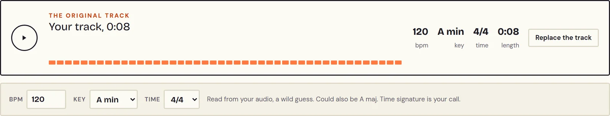
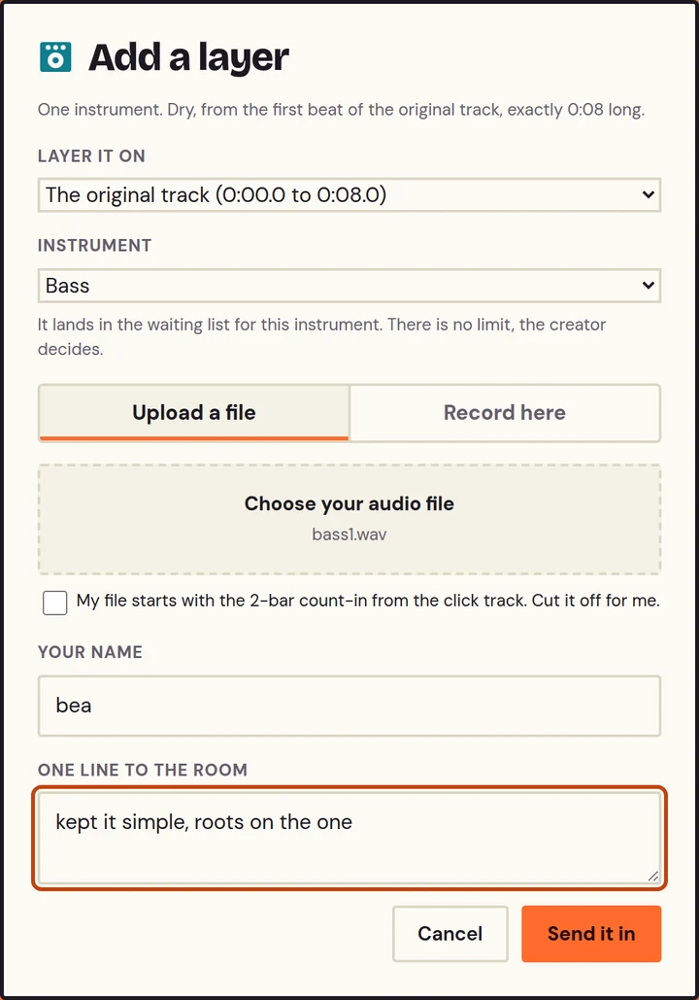
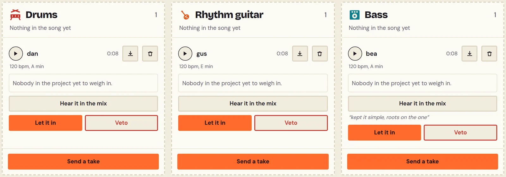
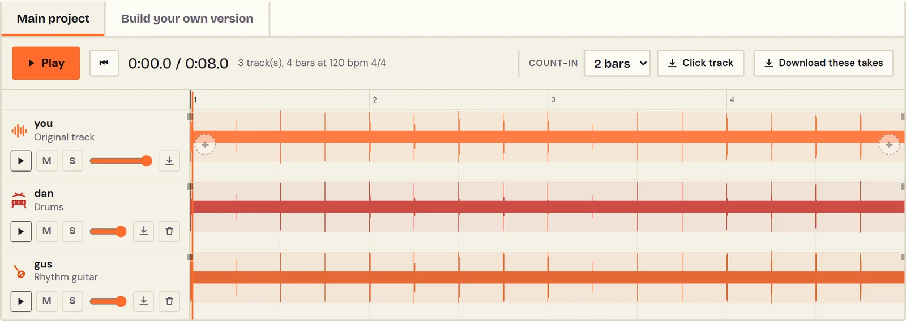
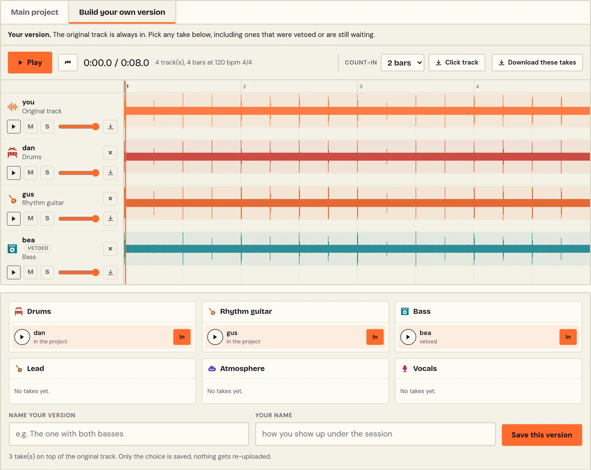

Make a song with strangers
Start with a single track. Other musicians stack their parts on top until it's a full song.
Picked for you
Start with a single track. Other musicians stack their parts on top until it's a full song.
Drop a riff, a groove or a vocal. Strangers start stacking layers on it.
Any audio file works. We'll pick up its tempo and key.
A 2-bar count-in with a click track, then we listen.
Every session has two sides. The creator starts it with a track and decides what gets in. Musicians join by adding their own layer on top.
Upload an audio track. It becomes the first instrument of the song: Stackato reads its tempo and key, and its length is the length of every layer that follows.

Pick your instrument, play along in your DAW with the click track, or record right in the page.

New takes get a listen in the mix first, then they’re let in or vetoed. It’s their track, so they shape the project.

Every take that gets in stacks up on the creator’s track. You build on each other’s instruments, one layer at a time.

Every take stays available: the ones in the project, the ones still waiting, even the vetoed ones. Pick your layers, balance them your way and save your mix. Every mix can be heard by everyone.
Nobody has to.
Anyone can.
